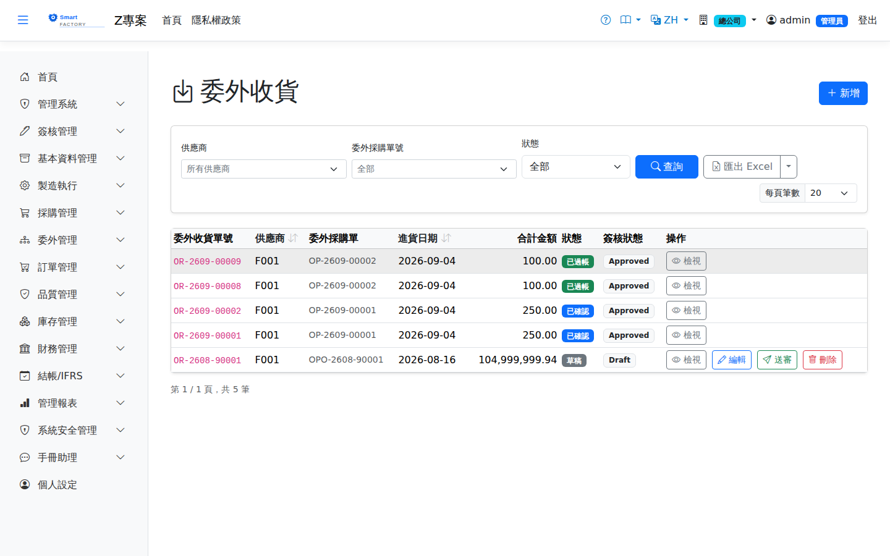

依委外採購單收回加工完成品：成品入庫單價＝在途外料結轉成本＋應付加工費（除以實收量）。系統依發料時點 AVCO 逐料計算超耗，超過合約允收損耗率的部分自動列為超耗扣款，於自動產生的委外應付發票中以負項扣減。Receives finished parts against an outsource PO: the put-away unit cost = the carried-over cost of the in-transit material + the processing fee payable, divided by the quantity actually received. The system calculates excess consumption per material at the AVCO cost of the issue date; anything beyond the agreed scrap allowance becomes a scrap penalty and is deducted as a negative line on the outsource AP invoice created automatically.

委外收貨畫面截圖（示意，實際欄位/資料依權限與查詢條件而異）Outsource receipt screenshot (illustrative; actual fields and data vary by permission and query criteria)
查詢Search
1查詢列輸入條件後點「查詢」；欄位標題可點擊排序，清單下方有分頁導航。Enter your criteria on the query bar and click "Search"; column headers can be clicked to sort, and the paging controls sit below the list.
單據狀態Status
| 狀態Status | 說明Guide |
|---|
| 草稿 DraftDraft | 已建立未生效，可自由編輯、刪除；需簽核者於此狀態送審。Created but not yet effective; can be freely edited or deleted, and submitted for approval from this status. |
| 待審核Pending approval | 已送審等待簽核，不可編輯；可撤回改回草稿。Submitted and waiting for approval; it cannot be edited, but it can be withdrawn back to draft. |
| 已確認 ConfirmedConfirmed | 簽核核准（或免簽核直接確認）後生效，等待後續作業/過帳。Effective once approved (or confirmed directly when no approval is required), waiting for the next step or for posting. |
| 已過帳 PostedPosted | 庫存/帳務已入帳，單據不可再修改。Stock and accounting have been posted; the document can no longer be changed. |
| 已作廢 VoidVoid | 反向沖銷已過帳內容；作廢原因需留存，不可復原。Reverses what was posted; the void reason is kept and the action cannot be undone. |
作業流程Process
收貨Receipt
1點「新增」選擇委外採購單，帶出加工單價與在途外料。Click "Add" and pick the outsource PO to bring in the processing price and the in-transit material.
2輸入實收量與入庫倉/儲位，儲存為草稿。Enter the quantity actually received and the receiving warehouse/location, then save as a draft.
3確認：回寫委外採購單已收量。簡化模式下同時過帳入庫（OI）、更新品號均價；非簡化模式要再到「入庫上架」上架——非免驗品號只能先上架到待驗倉，品檢（IQC）合格後系統自動轉入收貨單記錄的一般倉（沒填時用品號類別的預設倉儲）。要品檢的品號兩者都沒有時，確認會被擋下並寫出品號——否則品檢合格也沒有地方可放。Confirm: the received quantity is written back to the outsource PO. In simplified mode this also posts the goods into stock (OI) and updates the average cost; otherwise put them away under "Putaway" — products that are not inspection-exempt can only go to the quarantine warehouse first, and once IQC passes the system moves them automatically to the warehouse recorded on the receipt (or the product category default if none). If a product that needs inspection has neither, confirming is blocked with the product named — otherwise it would have nowhere to go after passing inspection.
送外料自動扣：「委外送外料於收貨時自動扣」開啟時，不必另開委外發料單：每次確認委外收貨，系統依工單用料 × 累計收回量 ÷ 工單數量算出應發量，扣掉已發未退的部分後自動產生並過帳一張委外發料單（從品號類別的預設倉儲出庫，取不到會擋下並說明）。整品委外扣工單全部用料、工序委外只扣該工序的用料；先前手動發過的不會重扣。這張發料單和手動開的一樣進在外原料結算（超耗扣款、帶入成本）。Automatic send-out deduction: When "Deduct outsource send-out materials automatically at receipt" is on, no separate outsource material issue is needed: each time an outsource receipt is confirmed, the system works out the quantity due as work-order material × cumulative quantity received ÷ work-order quantity, subtracts what has already been issued (net of returns), and creates and posts an outsource issue slip for the difference (taken from the product category's default location; if there is none, it stops and says so). A fully outsourced order deducts all its materials, an outsourced operation only that operation's; anything issued manually earlier is not deducted again. The slip feeds the in-transit material settlement (scrap penalty, carried-in cost) exactly like a manual one.
當場驗收：「委外收料當場驗收」開啟時，手機委外收料每一行多一欄不良數：送出即完成品檢（MIL-STD-1916，Ac=0），不良 0＝合格，直接入一般倉（明細儲位，沒填用品號類別預設儲位）並回寫委外派工完工量；有不良＝整批入本廠待驗倉，依不合格品處置辦理，不算完工。免驗品號直接入一般倉。不必再經「入庫上架 → 進料檢驗」，非簡化廠也適用；桌機收貨單仍走原流程。Inspect at receipt: When "Inspect outsource deliveries at receipt" is on, each line of mobile Outsource Receiving gets a Defects field: submitting completes the inspection (MIL-STD-1916, Ac=0). 0 defects = pass, stocked straight into a normal warehouse (the line location, or the product category default) and added to the outsourced dispatch's completed quantity; any defect = the whole lot goes to the plant's quarantine warehouse for nonconformance handling and does not count as completed. Inspection-exempt products go straight to a normal warehouse. No "Putaway → Incoming Inspection" steps are needed, even in non-simplified plants; desktop receipts keep the normal flow.
4系統自動產生委外 AP 發票（加工費 − 超耗扣款）。The system creates the outsource AP invoice automatically (processing fee − scrap penalty).
委外工單的進度跟著「合格入庫」走：收回品進到一般倉的那一刻（簡化模式確認收貨、免驗品上架到一般倉、或品檢合格自動放行），數量才會累計到委外派工的完工量；放在待驗倉、還沒驗的不算。派工收滿就結案；整品委外工單的派工都結案時，工單直接變成「入庫完成」——成品已由收貨入庫，不需也不能再做完工入庫。品檢不合格的量留在待驗倉，依不合格品處置（重工、退廠）辦理。Outsourced work orders progress with "passed and stocked": only when the returned goods enter a normal warehouse (confirming the receipt in simplified mode, putting inspection-exempt goods into a normal warehouse, or the automatic release after IQC passes) is the quantity added to the outsourced dispatch's completed quantity; goods still waiting in quarantine do not count. A dispatch closes once full, and when every dispatch of a fully outsourced work order is closed the order goes straight to "Received into stock" — the finished goods were already stocked by the receipt, so production completion is neither needed nor allowed. Quantities that fail IQC stay in quarantine and are dealt with through nonconformance disposition (rework, return to supplier).
工序委外（派工「轉為委外」）：來源是廠內工單時，收回的是在製品，確認即過帳、不入庫，直接累計該工序派工的完工量；該工序投料同時自動扣（已領過的不重扣）。加工費與帶出料計入工單委外成本，完工入庫時併入成品成本。不能與整品委外混在同一張收貨單。Outsourced operations ("Convert to Outsource"): when the source is an in-house work order, the returned work in progress is posted on confirmation without going into inventory and added to that operation's dispatch; the operation's input materials are deducted at the same time (nothing already issued is deducted twice). The fee and materials go to the work order's outsource cost, included in the product cost at completion. Do not mix them with fully outsourced orders on a single receipt.
列印Printing
清單每列的 按鈕（需有列印權限）在新分頁開啟含 QR Code 的列印單，可直接列印或另存 PDF。列印單含委外採購單號、供應商名稱、異動類型、幣別與匯率，以及各行品號、品名、收料量、單位成本與入庫倉。The button on each row of the list (print permission required) opens a printout with a QR code in a new tab, ready to print or save as PDF. The printout shows the outsource PO number, supplier name, transaction type, currency and exchange rate, and for each line the product code and name, quantity received, unit cost and receiving warehouse.
欄位說明Field reference
表頭Header
| 欄位Field | 說明Guide |
|---|
| 委外進貨單號Outsource Receipt No. | 系統採番，不可修改Numbered by the system; not editable |
| 委外採購單Outsource purchase order | 必填Required 本次收回對應的委外採購單；選定後帶出待收回的加工品明細The outsource PO this receipt belongs to; selecting one brings in the parts still to be received |
| 進貨日期Receipt Date | 必填Required 委外加工品收回日期Date the outsourced parts are received back |
| 供應商Supplier | 必填Required 承接加工的委外廠商Subcontractor doing the work |
| 幣別 / 匯率Currency / Exchange Rate | 加工費的交易幣別與本次採用的匯率，決定入帳的本幣金額Transaction currency of the processing fee and the rate used, which determine the local-currency amount posted |
| 合計金額Total Amount | 本單加工費合計，由明細加總Total processing fee of this document, summed from the lines |
| 備註Notes | 整張單據的補充說明Notes for the whole document |
明細Lines
| 欄位Field | 說明Guide |
|---|
| 品號Item | 必填Required 收回的加工成品Finished parts received back |
| 進貨數量 / 單位Receipt Qty / UOM | 必填Required 本次收回的良品數量。單位改為下拉，只列該品號可用的單位；庫存數量一律由系統依品號主檔換算。超過委外採購量時，能否收貨依廠別參數「委外超收容許率」「委外超過容許上限時」（預設需具「超量核准」權限的主管確認），超收部分是否付加工費依「委外超收部分的加工費」；設為不付時，明細備註會記下合約單價與計費量。Good quantity received this time. The unit is now a drop-down listing only the units usable for the product, and the stock quantity is always converted by the system from the product master. Receiving more than the outsource order quantity follows the plant parameters "Outsource over-receipt tolerance" and "Outsource: beyond the tolerance" (by default a supervisor with the over-quantity approval right must confirm), and whether the extra is paid follows "Processing fee for the over-received quantity"; when it is not paid, the line remarks record the contract price and the billed quantity. |
| 單位成本Unit Cost | 該加工品的單位委外加工費，依委外報價主檔帶出Unit processing fee for this part, taken from the outsource quotation master |
| 金額Amount | 進貨數量 × 單位成本Receipt quantity × unit cost |
| 明細備註Line note | 系統在確認時寫入的說明，顯示在品號下方（唯讀）。例：廠別設「超收部分不付加工費」時，寫出合約單價與「計費量／實收量」，說明這一行的單位成本為什麼比合約低。An explanation the system writes when confirming, shown under the item code (read-only). For example, when the plant pays no fee for over-receipt, it records the contract price and "billed / received quantity", explaining why the line's unit cost is lower than the contract. |
送外料的實際耗用與標準用量的差額另計超耗扣款，計價採發料當時凍結的 AVCO 單位成本。Any difference between the actual consumption of the material sent out and the standard usage is charged as a scrap penalty, priced at the AVCO unit cost frozen at issue.
委外採購單Outsource purchase order、委外發退料單Outsource Material、委外加工對帳與損耗分析Outsource Reconciliation & Scrap Analysis
注意：Note:過帳/作廢命中已關帳期間會被期間鎖擋下。作廢會反沖庫存並回寫已收量。 Posting or voiding into a closed period is blocked by the period lock. Voiding reverses the stock movement and updates the received quantity.